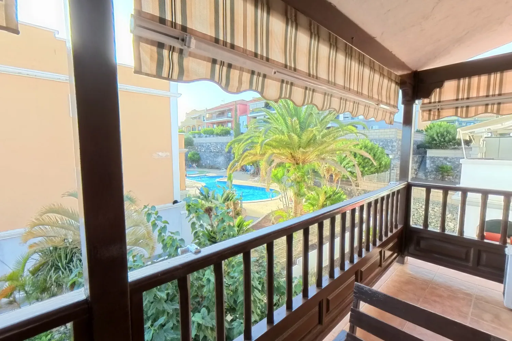
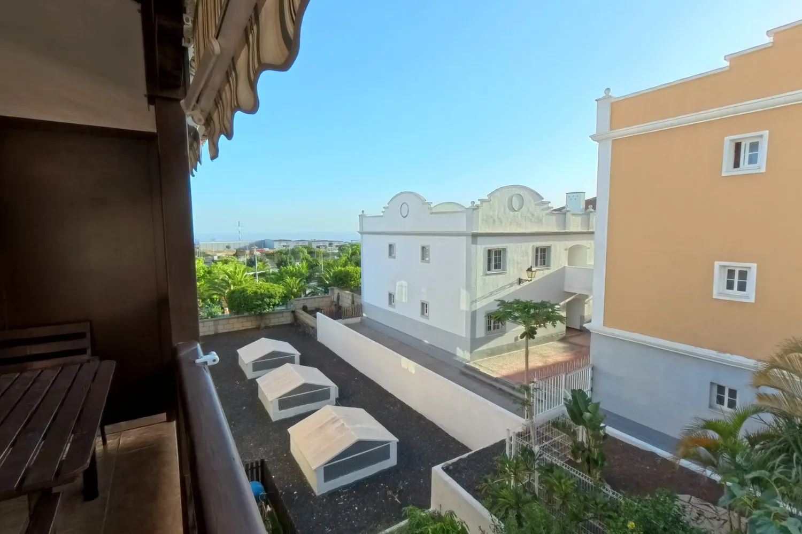
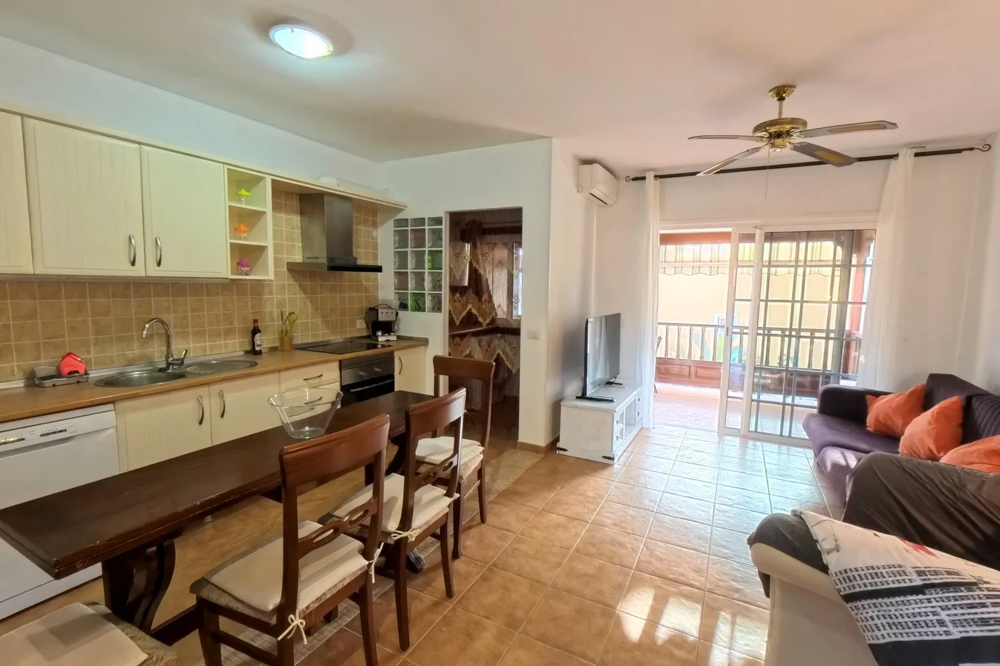
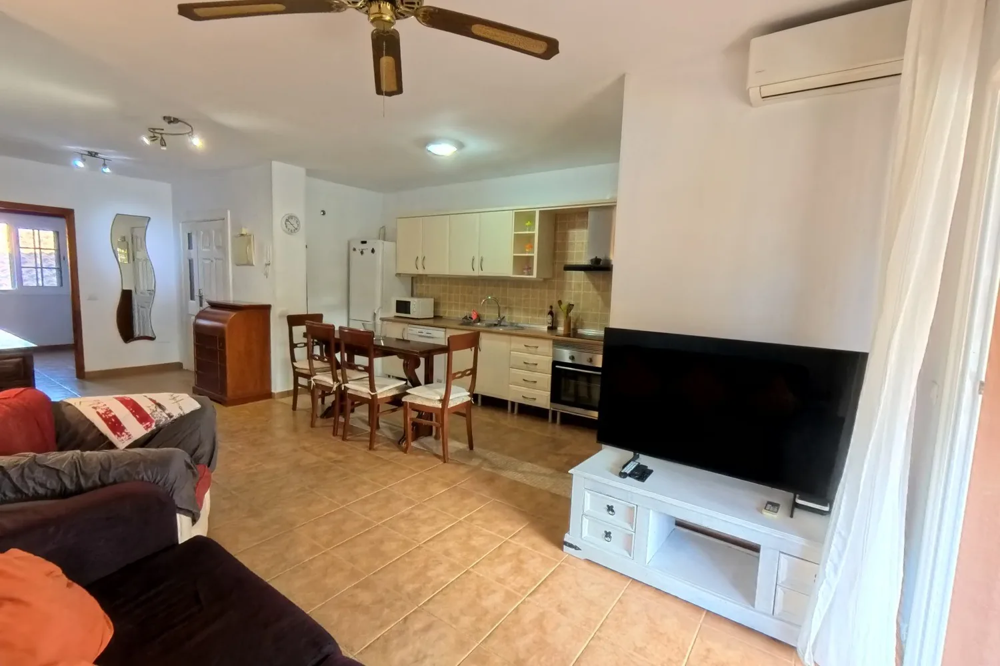
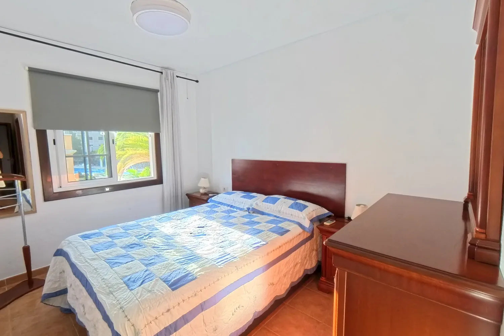

Ático de 3 dormitorios con terraza y vistas a la piscina
Las Chafiras, San Miguel de Abona





Residencial Biltmore Jardín de San Miguel: piscina, jardines y a pocos minutos del aeropuerto de Tenerife Sur.
Ático de 3 dormitorios y 2 baños en el residencial Biltmore Jardín de San Miguel, en Las Chafiras. Son 93 m² construidos —83 m² de vivienda según escritura más 10 m² de terraza privada— abiertos sobre la zona ajardinada y la piscina de la comunidad.
La distribución es clara: salón-comedor con la cocina en línea y salida directa a la terraza, lavadero con ventana a fachada, dormitorio principal con armarios empotrados, un segundo dormitorio con dos camas y un tercero que hoy funciona como habitación de invitados. Los dos baños son completos, uno con bañera y otro con ducha. Las tres habitaciones son exteriores, con ventana.
La vivienda está en segunda planta, es exterior y cuenta con aire acondicionado. Se entrega amueblada y lista para entrar a vivir, con la comunidad al corriente de pago.
Las Chafiras es el nudo de servicios del sur de la isla: comercios, colegios, polígono y la autopista TF-1 a mano, con el aeropuerto de Tenerife Sur, Golf del Sur y las playas de El Médano a pocos minutos en coche.
Y desde julio de 2026 cuenta con La Gran Manzana, el nuevo centro comercial de Las Chafiras junto a la TF-1, a unos 200 metros: 18.000 m² con supermercado, tiendas, restauración y cines, el primero de España diseñado para autoabastecerse de energía y agua. Y el golf, a unos 4 kilómetros.
Las plazas de garaje se ofrecen aparte. Acompañamos la compra con estudio de financiación y con el estado real del inmueble, la comunidad y la documentación.
Características
Ficha técnica
- Superficie construida
- 93 m²
- Superficie útil
- 90 m²
- Dormitorios
- 3
- Baños
- 2
- Planta
- 2ª planta exterior
- Ascensor
- Sí
- Orientación
- Sur
- Año de construcción
- 2006
- Estado
- Segunda mano · buen estado
- Comunidad
- 72 €/mes
- Certificado energético
- F · 257,95 kWh/m² año · 74,62 kg CO2/m² año
- Referencia
- 14541
Hablar de esta vivienda por WhatsApp ↗ Pedir información
Comprar casa en San Miguel de Abona